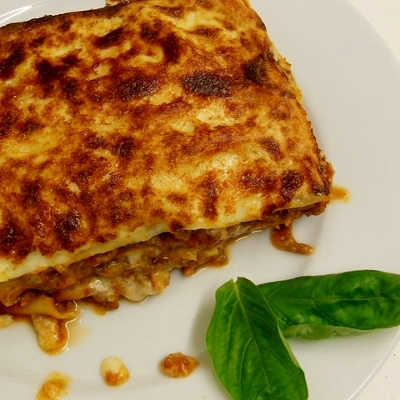

Classic Lasagna

Description
A simple and classic lasagna recipe.
- 30 min prep
- 30 min cook
Ingredients
- 1 pack lasagna noodles
- 500g lean ground beef
- 1 jar spaghetti sauce
- 1 clove garlic, minced
- 250g shredded mozzarella
- 250g shredded cheddar
- 2 cups ricotta cheese
- salt and pepper
Steps
- Bring a large pot of lightly salted water to a boil. Add pasta and cook for 8 to 10 minutes or until al dente; drain.
- Preheat oven to 175°C. In a large skillet over medium-high heat, brown beef and season with salt and pepper; drain. Stir in spaghetti sauce and garlic and simmer 5 minutes.
- In a medium bowl, combine mozzarella, cheddar and ricotta; stir well. In 20x30cm pan, alternate layers of noodles, meat mixture and cheese mixture until pan is filled.
- Bake in preheated oven for 30 minutes, or until cheese is melted and bubbly.
Return to home